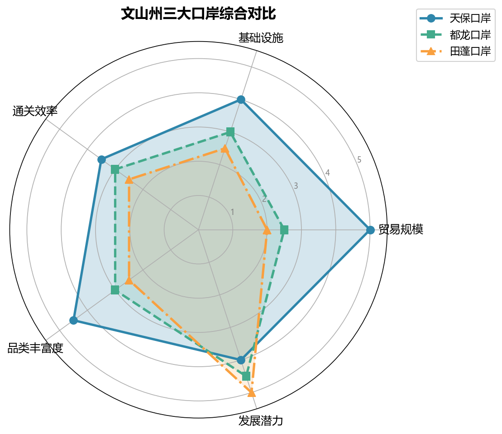

中越跨境经济合作区（文山段）
深度专题笔记 — 跨境合作机制、三大口岸对比、边民互市、跨境电商、RCEP 机遇全景分析。
一、战略定位
文山州拥有 438 公里国境线，是云南通往越南最便捷的陆路通道群。在国家"一带一路"和 RCEP 双重框架下，文山正从 "对越作战原战区" 转型为 "中国西南面向东盟的开放前沿"。
| 维度 | 定位 |
|---|---|
| 国家战略 | 一带一路 + 西部陆海新通道的重要节点 |
| 省级定位 | "3815"战略中口岸经济的核心承载区 |
| 州级战略 | 三大经济之一——口岸经济（与资源经济、园区经济并列） |
| 国际框架 | RCEP 框架下的中越跨境合作示范区 |
二、三大口岸对比
文山州形成"天保为核心、都龙和田蓬为两翼"的口岸群格局，三个口岸均为国家级一类口岸，但发展阶段与功能定位差异显著。

2.1 天保口岸（麻栗坡县）
| 维度 | 详情 |
|---|---|
| 口岸等级 | 国家一类口岸（1993 年恢复开通） |
| 对接越南 | 越南河江省清水口岸 → 河内（约 400 km） |
| 2025 年贸易额 | 占全州口岸贸易的 60%+ |
| 核心功能 | 综合贸易（矿产品进口 / 农产品出口 / 工业品出口） |
| 基础设施 | 货场扩建中，"智慧口岸"建设推进 |
| 特色 | 中越边交会、"文山·睦邻"交流合作周举办地 |
优势：最成熟、贸易量最大、配套设施最完善 瓶颈：通关能力接近上限，需扩建货场与智能化升级
2.2 都龙口岸（马关县）
| 维度 | 详情 |
|---|---|
| 口岸等级 | 国家一类口岸（近年升级） |
| 对接越南 | 越南箐门口岸 |
| 核心功能 | 矿产进口（锌精矿等）+ 农产品出口 |
| 基础设施 | 处于完善期，通关流量培育中 |
| 特色 | 矿产品专业通道 |
优势：矿产品进口专业化，马关县矿产资源互补 瓶颈：基础设施仍在建设中，贸易规模待提升
2.3 田蓬口岸（富宁县）
| 维度 | 详情 |
|---|---|
| 口岸等级 | 国家一类口岸（2022 年通过国家验收） |
| 对接越南 | 越南上蓬口岸 → 河江省 / 下龙湾方向 |
| 核心功能 | "东中西"布局的东翼，连接珠三角的桥头堡 |
| 基础设施 | 二期工程加速中 |
| 特色 | 最年轻口岸，文山—广西—珠三角联动节点 |
优势：靠近广西和珠三角，区位独特，后发优势 瓶颈：起步最晚，贸易体量尚小
2.4 三口岸对比总表
| 对比维度 | 天保口岸 | 都龙口岸 | 田蓬口岸 |
|---|---|---|---|
| 开通/升级时间 | 1993 年 | 近年升级 | 2022 年验收 |
| 贸易规模 | ★★★★★ | ★★☆ | ★★ |
| 基础设施成熟度 | ★★★★ | ★★★ | ★★★ |
| 主要进出口品类 | 综合（矿产+农产品+工业品） | 矿产品+农产品 | 日用百货+农产品 |
| 战略角色 | 核心枢纽 | 矿产专线 | 东翼新星 |
| 2024-2026 重点 | 智慧口岸+货场扩建 | 基础设施完善+流量培育 | 二期工程+产业招商 |
三、跨境合作机制
3.1 中越双边合作框架
| 层级 | 机制 | 文山参与 |
|---|---|---|
| 国家层面 | 中越经贸合作委员会 | 口岸基础设施对接 |
| 省级层面 | 云南—河江/老街/莱州联合工作组 | 边境贸易、跨境旅游、农业合作 |
| 州市层面 | 文山—河江定期会晤 | 口岸通关协调、边民互市管理 |
| 民间层面 | 边民互助组/合作社 | 边民互市 + 落地加工 |
3.2 "两国一区、境内关外"模式
中越跨境经济合作区的最高形态是"两国一区、境内关外"：
┌─────────────────────────────────────────┐
│ 中越跨境经济合作区 │
│ ┌──────────────┐ ┌──────────────┐ │
│ │ 中方区域 │ │ 越方区域 │ │
│ │ (境内关外) │ │ (境内关外) │ │
│ │ │ │ │ │
│ │ 加工制造 │ │ 组装/仓储 │ │
│ │ 跨境电商 │ │ 物流分拨 │ │
│ │ 展销中心 │ │ 原料供应 │ │
│ └──────────────┘ └──────────────┘ │
│ ↕ 人员/货物/车辆自由流动 ↕ │
└─────────────────────────────────────────┘
预期突破时间：2026 年前后天保口岸有望率先取得实质性进展。
四、边民互市政策
4.1 政策核心
| 政策要点 | 内容 |
|---|---|
| 免税额度 | 边民通过互市贸易进口商品（每人每日限值以内），免征进口关税和进口环节税 |
| 参与主体 | 边境地区常住居民（边民） |
| 组织形式 | "党组织 + 边民互助组 + 合作社"集中运作 |
4.2 文山模式："互市 + 落地加工"
传统模式（通道经济）：
边民进货 → 转卖赚差价 → 附加值极低
文山模式（落地加工）：
合作社统一进口（越南海鲜/水果/中药材）
↓
互市免税 → 降低原料成本
↓
落地加工（本地工厂）→ 提升附加值
↓
产品销往国内市场 / 电商平台
核心优势： - 边民不亲自扛货，以合作社形式参与，降低门槛 - 进口原料免税入区加工，再内销时按成品征税（低于原料关税） - 产业链留在本地，实现从"过路财神"到"落地生根"
4.3 落地加工重点品类
| 品类 | 进口来源 | 加工方向 |
|---|---|---|
| 越南海鲜（虾/鱼） | 边民互市进口 | 冷冻加工 → 国内市场 |
| 热带水果（火龙果/榴莲） | 边民互市进口 | 分拣/包装/果汁加工 |
| 越南中药材 | 边民互市进口 | 饮片加工/提取 |
| 橡胶 | 边民互市进口 | 初级加工 → 轮胎/橡胶制品 |
关联阅读：外贸发展（2025 年进出口 39 亿元，增长 38.8%）
五、跨境电商发展
5.1 监管模式与文山应用
| 监管代码 | 模式名称 | 文山适用场景 |
|---|---|---|
| 9610 | 跨境电商零售出口（B2C） | 小包裹直发越南消费者 |
| 9710 | 跨境电商 B2B 直接出口 | 三七/辣椒/日用百货批量出口越南企业 |
| 9810 | 跨境电商出口海外仓 | 在越南建海外仓，提前备货→当地配送 |
| 1210 | 保税跨境电商进口 | 越南/东盟商品保税备货→国内消费者网购 |
5.2 业务场景
场景一：中国商品 → 越南消费者
文山跨境电商产业园（集货）
↓ 9810 出口海外仓模式
越南河内/胡志明市海外仓（备货）
↓ 本地物流配送
越南消费者收货
场景二：越南商品 → 中国消费者
边民互市免税进口（越南水果/海鲜/特产）
↓ 1210 保税备货模式
国内电商平台（抖音/淘宝/拼多多）销售
↓ 直播带货
中国消费者收货
5.3 发展重点（2024-2026）
- 2024 年：建设跨境电商产业园，培育本土跨境电商企业
- 2025 年："边民互市 + 跨境电商"模式成熟，直播电商带货越南特产
- 2026 年：跨境电商交易额占口岸贸易比重显著提升
六、RCEP 框架下的机遇
6.1 关税红利
| 品类 | RCEP 前关税 | RCEP 实施后 | 对文山影响 |
|---|---|---|---|
| 三七出口越南 | 5-10% | 逐步降至 0% | 提升三七在东盟竞争力 |
| 高原果蔬出口 | 10-15% | 逐步降至 0% | 扩大粤港澳+东盟双市场 |
| 铝制品出口 | 5-8% | 逐步降至 0% | 绿色铝打开东盟基建市场 |
| 越南农产品进口 | 5-20% | 逐步降至 0% | 扩大边民互市品类 |
6.2 原产地累积规则
RCEP 的原产地累积规则是文山吸引东部产业转移的关键：
在文山加工的产品，可以将来自 RCEP 其他成员国的原材料价值累积计算，更容易达到"区域价值成分 40%"标准，从而享受优惠关税。
→ 吸引东部沿海的加工制造业落地文山口岸周边工业园区（"岸产城"融合）
6.3 三年机遇窗口（2024-2026）
| 年份 | 阶段主题 | 关键动作 |
|---|---|---|
| 2024 | 基础建设与流量回升 | 天保货场扩建、田蓬二期、智慧口岸推广 |
| 2025 | 产业集聚与模式融合 | "互市+电商"成熟、东部产业转移落地 |
| 2026 | 跨境经济合作区突破 | "两国一区"实质性进展、文蒙铁路通车预期 |
七、综合挑战与对策
7.1 主要挑战
| 挑战 | 具体表现 | 严重程度 |
|---|---|---|
| 基础设施滞后 | 部分口岸通关能力不足，仓储/冷链缺乏 | ★★★★ |
| 产业基础薄弱 | 本地加工企业少，落地加工比例偏低 | ★★★★ |
| 人才短缺 | 跨境电商运营/外贸/外语人才不足 | ★★★ |
| 政策协调 | 中越双方口岸对接标准不一，通关效率待提升 | ★★★ |
| 地缘风险 | 中越关系波动可能影响贸易稳定性 | ★★ |
7.2 对策建议
基础设施 → "智慧口岸"升级 + 文蒙铁路打通腹地物流
产业培育 → 招商东部加工企业落地口岸园区
人才引进 → 与昆明高校合作培养跨境电商/外贸人才
政策突破 → 争取"境内关外"特殊监管区试点
风险对冲 → 多元化市场（东盟+粤港澳+国内市场）
八、2024-2026 年关键节点前瞻
2024 Q3-Q4
├── 天保口岸货场扩建一期完工
├── 田蓬口岸二期工程启动
└── 智慧口岸一期上线（通关时间缩短 30%）
2025
├── "边民互市+跨境电商"模式规模化运营
├── 首批东部产业转移项目落地口岸园区
├── 中越跨境旅游线路开通
└── 文蒙铁路主体工程过半
2026
├── 跨境经济合作区"两国一区"方案获批（预期）
├── 文蒙铁路通车预期 → 物流成本大幅降低
├── 天保口岸年进出口额突破 50 亿元
└── RCEP 三轮降税完成 → 三七/铝/果蔬出口全面零关税
本文基于 2024-2026 年公开政策文件与研究分析综合撰写。关联：外贸发展数据、口岸经济政策、经济全景中口岸定位、边境贸易与铁路建设动态。